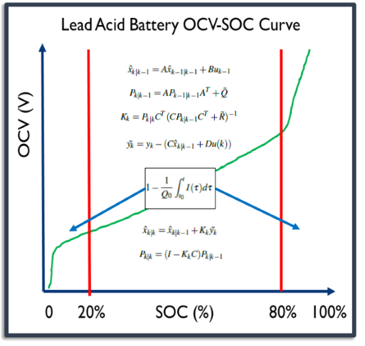

A State-of-Charge Estimator for a Semi-Autonomous Electric Wheelchair
 This project sought to develop an improved State-of-Charge (SOC) estimator for wheelchair battery packs. Presently, many wheelchairs measure the battery's voltage to display the battery SOC. This is dangerous
because the pack voltage alone neither considers the battery's non-linear charge curve nor the battery dynamics. I sought to improve this by developing a piece-wise linear Kalman filtering method that realized
a coulomb accumulator in the non-linear regions of the battery's discharge curve and a linear Kalman filter in the battery's linear region. I achieved estimation error of 0.85%.
This project sought to develop an improved State-of-Charge (SOC) estimator for wheelchair battery packs. Presently, many wheelchairs measure the battery's voltage to display the battery SOC. This is dangerous
because the pack voltage alone neither considers the battery's non-linear charge curve nor the battery dynamics. I sought to improve this by developing a piece-wise linear Kalman filtering method that realized
a coulomb accumulator in the non-linear regions of the battery's discharge curve and a linear Kalman filter in the battery's linear region. I achieved estimation error of 0.85%.
 For this project, I first designed a voltage and a current monitoring circuit for the battery pack. Then, I characterized a wheelchair's battery back by finding it's open-circuit voltage state-of-charge curve and the battery's 2nd order dynamics. Using this information, I generated a 2nd order battery model and verified the model in simulation. In practice, I validated my model by driving the wheelchair around in a pattern similar to that of the average college student. All of the code for collecting data was developed in Python with ROS. All of the code to process the data was developed in MATLAB.
Further Information
I worked on this project while I was an undergraduate researcher at Penn State University working in Dr. Sean Brennan's Intelligent Vehicles and Systems Group. This work resulted in part of my undergraduate thesis, a Penn State undergraduate research symposium poster, and authorship on a conference paper. I presented this work at the DSCC 2016 in Minneapolis, MN.
Skills and Tools Used
- Python, C++, ROS
- Model-Based Estimation, Kalman Filters
- MATLAB
- Battery Modeling and Characterization
Awards and Press
- Penn State EECS Press Release
- Penn State Nationwide Recruiting Materials
- Penn State University Rodney A. Erickson Summer Discovery Grant